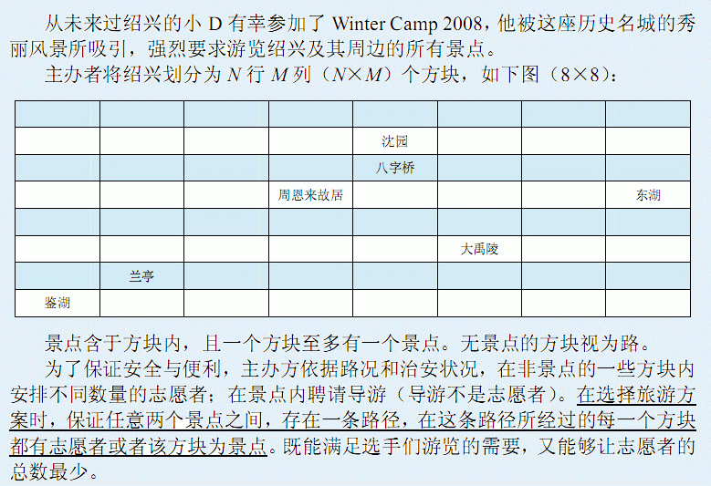
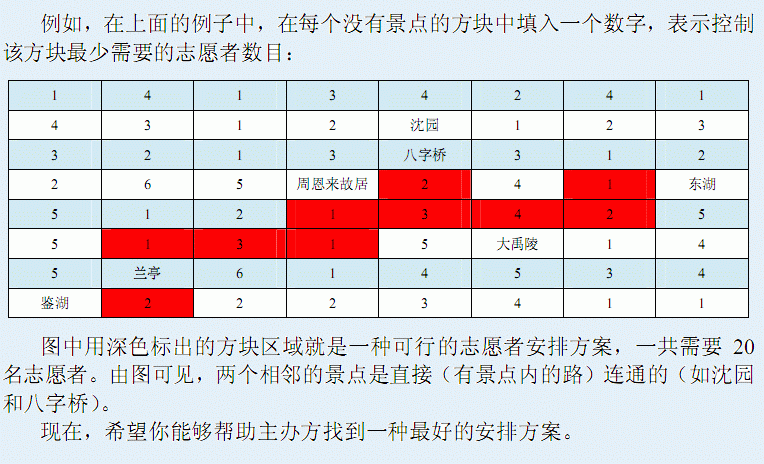

第一行有两个整数，N和 M，描述方块的数目。
接下来 N行， 每行有 M 个非负整数， 如果该整数为 0， 则该方块为一个景点；
否则表示控制该方块至少需要的志愿者数目。 相邻的整数用 （若干个） 空格隔开，
行首行末也可能有多余的空格。


第一行有两个整数，N和 M，描述方块的数目。
接下来 N行， 每行有 M 个非负整数， 如果该整数为 0， 则该方块为一个景点；
否则表示控制该方块至少需要的志愿者数目。 相邻的整数用 （若干个） 空格隔开，
行首行末也可能有多余的空格。
由 N + 1行组成。第一行为一个整数，表示你所给出的方案
中安排的志愿者总数目。
接下来 N行，每行M 个字符，描述方案中相应方块的情况：
z ‘_’（下划线）表示该方块没有安排志愿者；
z ‘o’（小写英文字母o）表示该方块安排了志愿者；
z ‘x’（小写英文字母x）表示该方块是一个景点；
注：请注意输出格式要求，如果缺少某一行或者某一行的字符数目和要求不
一致（任何一行中，多余的空格都不允许出现） ，都可能导致该测试点不得分。
4 4
0 1 1 0
2 5 5 1
1 5 5 1
0 1 1 0
6
xoox
___o
___o
xoox
对于100%的数据，N,M,K≤10，其中K为景点的数目。输入的所有整数均在[0,2^16]的范围内